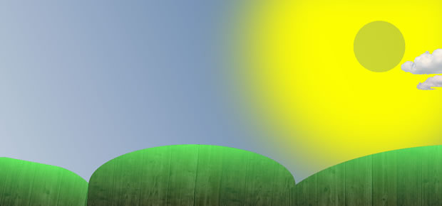
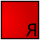

Making a move with CSS3 animations
Introduction
Traditionally, the Web was a very static place. Achieving animations was not really possible in any sane way until JavaScript, animated GIFs and Flash came along, at which point we rejoiced and applauded the ensuing slew of skip intros and horrible obtrusive animations.
This was all well and good, but there was still no way for non-developers to create animations using open standards. You can spout all the religious arguments you want about animation belonging in the behaviour layer rather than the presentation layer, but I think animation definitely falls in the realm of design. And now, with CSS3 transitions and animations, we can animate elements of our web documents. Standards-based web design with added fun! And added skip intros, if you're that way inclined...
Opera has supported transitions now for a long time, and we've already written about them in CSS3 transitions and 2D transforms. This article focuses on the other way to animate things using stylesheets — CSS3 animations. Below we'll give you a concrete introduction including where the specification and browser support is at, how animations differ from transitions, basic syntax, and a list of examples.
How mature is the technology?
The CSS animations spec, proposed and edited by Apple, is currently in Working Draft status and is labelled as "Outdated" on the CSS working group current work page, so I think we can expect to see some minor changes before it is completed, but the basic principle should remain the same.
In any case, it has already been implemented experimentally in Firefox (since 5), Chrome (since 4), Safari (since 4), IE (in 10), and Opera since version 12. Note "experimentally" — this means that you need to use appropriate vendor prefixes for each browser.
Basic syntax
Animations differ from transitions in that transitions are only triggered when a state change occurs (such as hovering over an element), whereas animations can be triggered independent of a state change, usually a set amount of time after a page loads, or on an event, via JS. Also, a transition animation always occurs on any properties that change their values when a state change occurs, whereas a CSS animation can animate between property values even if those properties are not set on the default state of the element being animated.
Defining an animation
To set up an animation, you first have to define some animation keyframes, in a special new at-rule block, which looks like this:
@keyframes spin {
from { transform: rotate(0deg); }
to { transform: rotate(360deg); }
}Here we are saying that this animation is called spin
, and what the animation does is smoothly rotates whatever it is applied to through 360 degrees. Nothing else is defined here at all, which may sound lacking, but in actual fact it is very flexible, as you can define an animation once, and then apply it to many different elements with different durations and other behaviour.
You can also use 0% and 100% in place of from and to. If you like, you can include intermediate keyframes, for more complex animations:
@keyframes spin {
0% { transform: rotate(0deg); }
25% { transform: rotate(30deg); }
50% { transform: rotate(120deg); }
100% { transform: rotate(360deg); }
}You can write keyframes that have the same values on one line, like this:
25%, 50% { opacity: 0.9; }Note: You can set your animation so that the first keyframe doesn't appear at 0%, e.g. 40%. If you do this, however, nothing will change before that point in the animation. If you don't set the last keyframe as 100%, e.g. 70%, the animation will reach that point and stay the same up until 100%.
The current main annoyance of using animations is that you have to define a separate keyframes block for each browser, as the at-rule itself uses a prefix, so @-o-keyframes animation1 { }, @-moz-keyframes animation1 { }, etc. And this is in addition to the different prefixed versions of all the animation properties you'll see later. But at least within each prefixed at-rule, you only need to include the single prefixed properties for that browser, in the case of properties that require prefixes. And there are a couple of JavaScript libraries worth looking at, which detect the rendering engine at runtime and add the appropriate prefixes where needed, saving you having to write all of them out. See Prefixfree by Lea Verou, and Prefixr by Jeffrey Way.
Applying an animation
To animate an element using this animation, you apply it to the element using the animation-name property:
#image {
animation-name: spin;
}To make this do anything, you also need to tell the animation how long it should take to run from start to finish: this is done using animation-duration:
#image {
animation-name: spin;
animation-duration: 3s;
}these are all the properties you need to get an animation to run once on an element. Let's now look at what other properties we have to control animations.
How many times do we want it to happen?
To make our animation run a set number of times, you use animation-iteration-count:
#image {
animation-name: spin;
animation-duration: 3s;
animation-iteration-count: 10;
}the value of animation-iteration-count can be any positive whole number, or you can set it to infinite to make it go on forever. The default value is 1.
To see what we have so far in action, check out my basic spinner example.
Varying animation rate
The first example doesn't look too bad, but you'll notice that in each iteration of the animation, the sun starts off by spinning fast, then slows down to a stop. You can alter the rate of animation change by setting different values of the animation-timing-function property. The different possible values are:
linearmakes the animation happen at the same rate from beginning to end.ease, the default value, causes the animation to start quickly and then gradually slow down, as you've already seen.ease-outmakes the animation start quickly, stay quick for longer thanease, and then slow down more abruptly at the end.ease-inmakes the animation start off slowly, and then speed up toward the end.ease-in-outmeans that the animation starts off by accelerating, is quite fast for most of the duration, and decelerates toward the end.steps()is slightly different. Instead of giving a smooth animation throughout, this causes the animation to jump between a set number of steps placed equally along the duration. For example,steps(10)would make the animation jump along in ten equal steps. There's also an optional second parameter that takes a value ofstartorend.steps(10, start)would specify that the change in property value should happen at the start of each step, whilesteps(10, end)means the change would come at the end.cubic-bezier()applies your own custom cubic Bézier curve to dictate the change in animation rate. This function takes four arguments: the X and Y coordinates of the beginning control handle, and the X and Y coordinates of the end control handle: for examplecubic-bezier(.28, 1.48, .9, .02).
Don't understand cubic Bézier curves? Lea Verou has created a fantastic visual tool allowing you to easily visualise what we are on about, see the effects of different timing function values, and even generate your own cubic bezier values. Check out cubic-bezier.com.
To make the spinning sun look more consistent, I set animation-timing-function to linear — load up linear spinner to see the result.
To create a "bounce" effect, you can use a cubic Bézier curve value with drag handle values greater than the lower or upper bounds of the graph, e.g. cubic-bezier(.2,-0.36,.71,1.45)
Animation delays
You can set a delay before the animation starts, by setting an animation-delay property:
#image {
animation-delay: 4s;
}This property can take positive and negative values. A positive value will delay when the animation starts, whereas a negative value will make the animation start part way through the specified animation duration. You'll most commonly use this when you've got multiple animations that you want to fire at different times to provide a complete sequence.
Start to end, or back and forth?
By default, animations that run multiple times will go from start to end, then flick straight back to the start and go to the end again, and so on. You can instead make the animation go smoothly back and forth, so from start to end, then from end to start, start to end, and so on, by specifying animation-direction: alternate; on the element.
To see the effect of this, check out my alternate spinner example. Note that the timing function effect is reversed as well, on the alternate animations.
animation-fill-mode
The last property we'll look at is animation-fill-mode. This allows you to specify how the animated element is displayed after an animation ends or during an animation-delay. The possible values of animation-fill-mode are:
noneis the default value — by default, when an animation ends the element it is applied to will go back to using its intrinsic styling. In addition, no styling from animation keyframes will be applied to an element during an animation delay.forwardsmakes an element with an animation applied to it retain the styles defined by the properties in the final keyframe after the animation ends.backwardscauses styles defined in the first keyframe to be applied to the element the animation is applied to during ananimation-delay, rather than the default element styles.bothapplies the combined effects offorwardsandbackwardsto an element undergoing an animation.
To experiment with some of these effects, I've created another example including an animation that moves the spinning sun, and an animation delay. I've then made four versions, each of which has a different value of animation-fill-mode:
animation-fill-mode: none;— notice that the sun starts in the middle of the screen as defined in the #image ruleset, then jumps to the position defined in the 0% keyframe when the animation starts. At the end of the animation, it jumps back to the middle of the screen again.animation-fill-mode: backwards;— here the sun starts at the position defined in the 0% keyframe, and stays there until the animation starts. At the end of the animation, it jumps back to the middle of the screen again.animation-fill-mode: forwards;— in this case, the sun starts in the middle of the screen as defined in the #image ruleset, then jumps to the position defined in the 0% keyframe when the animation starts. At the end of the animation, it stays in the position defined in the 100% keyframe.animation-fill-mode: both;— the sun now starts at the position defined in the 0% keyframe, and stays there until the animation starts. At the end of the animation, it stays in the position defined in the 100% keyframe.
Animation shorthand
You need to write a lot of code for CSS animations due to having to write multiple keyframe blocks and multiple properties including all the different prefixes. Fortunately, you can use shorthand to seriously reduce the amount of code needed.
The following properties:
animation-name: spin;
animation-duration: 3s;
animation-timing-function: linear;
animation-delay: 3s;
animation-iteration-count: infinite;
animation-direction: alternate;
animation-fill-mode: both;can be replaced by this one line:
animation: spin 3s linear 3s infinite alternate both;The spec is not very specific in defining the exact order of the property values in the shorthand, but it’s best to stick with the order shown above to avoid potential browser bugs. Various sources indicate that this order fulfils the idiosyncrasies different browsers currently have.
You need to include animation-name and animation-duration for the animation to do anything at all. If you don’t explicitly specify the other values, their default values will be applied:
animation-timing-function: ease;
animation-delay: 0s;
animation-iteration-count: 1;
animation-direction: normal;
animation-fill-mode: none;You can apply multiple animations in a single rule by including them in the same property, separated by commas. This works for both longhand and shorthand values. Here's an example:
animation: spin 3s, movement 5s;
animation-name: spin, movement;
animation-duration: 3s, 5s;If you’re using longhand properties with different numbers of values, you need to specify all the animation names to be applied. Thereafter, if any of the other properties have less values than the number of animations specified, they will be alternated to fill up the gaps. For example:
animation-name: spin, movement, glow;
animation-duration: 3s, 5s;
animation-delay: 2s;The spin animation will have a duration of 3 seconds, and the zap animation will have a duration of 5 seconds. The glow animation will have a delay of 3 seconds again, because the duration values have run out, so they start from the beginning again. All of the animations will have a delay of 2 seconds.
A More involved example
To round off the article, I've created a slightly more interesting example with some more animations involved — check out my Sunrise example in all its glory. If you dissect the code, you'll see a number of animations working together to produce the final effect.
Summary
That's it for our basic tour of CSS animations — let us know what you think, and have fun.
Chris Mills

Chris Mills is a web technologist, open standards evangelist and education agitator, currently working at Opera Software in the developer relations team. He spends most of his time writing articles about web standards for dev.opera.com and other publications (such as .net mag and A List Apart), giving talks at universities and industry conferences, and lobbying universities to improve their web education courses. He believes that education is the answer to everything, but in particular he is passionate about using education to improve the overall content quality, accessibility, usability and future-viability of the Web.
He is the creator of the Opera Web standards curriculum, contributor to the WaSP InterACT project, and coauthor of InterACT with web standards: A Holistic Approach to Web Design. In August 2011, he also accepted the position of co-chair of the newly-formed Web Education Community Group.
Outside work he is a heavy metal drummer, proud father of three and lover of good beer.
This article is licensed under a Creative Commons Attribution 3.0 Unported license.
Comments
-
-

Seems that the final animation lacks double rainbows :)
-

Is there some smart - CSS only - way to restart an animation? (eg. I want to play an animation every time on :hover). I found this site http://css-tricks.com/restart-css-animation/ but the proposed solutions did not satisfy me :P
-

The problem with bad animated content could be solved since SVG+SMIL. But all the other browser developer focusing on incomplete standards...
-

@Chris Mills: IllusionMH contacted me and we found out that the animations actually restarts itself. So the :hover things should work. But from some reason the animations often stop working in Opera. No problem in other browsers :( They stop working randomly, so it is hard to make TC:
-

@BS-Harou oh, I'm sorry - I misunderstood what you were saying slightly. Yes, this is the case - we are already aware of this bug, and working on it.
-

@Chris Mills - sorry, I probably confused you with the article. Thank you for the info about the bug, I was afraid my computer is the only one who acts that way.
-

.@IllusionMH
-
Add like.,
-

"zap" should be "movement"
-

Great tutorial - although worth noting that Opera doesn't need the vendor prefix [at least in 12.10].
No new comments accepted.IllusionMH
Thursday, April 26, 2012
Or just use -prefix-free (by Lea Verou), it is easier than write all prefixes.
Spadar Shut
Saturday, April 28, 2012
Martin Kadlec
Thursday, May 3, 2012
Marius
Thursday, May 3, 2012
Martin Kadlec
Friday, May 4, 2012
Video of the problem: http://files.myopera.com/BS-Harou/files/anim_vid.webm
Example used: http://files.myopera.com/BS-Harou/files/anim_example.html
Win 7 64x, Opera 12 beta 32x, hw disabled, Atom 1.8GHz
Chris Mills
Friday, May 4, 2012
@Marius I am a big fan of SVG/SMIL for this kind of work, but the trouble is that the consensus across other browsers seems to be CSS animations, so we need to go with it really. It is a shame that SVG didn't catch on as much as we'd hoped, after IE finally started supporting it ;-(
Martin Kadlec
Friday, May 4, 2012
Chris Mills
Wednesday, June 6, 2012
Good call - I forgot about these. I've added a note. Thanks!
roso wongesp
Saturday, October 6, 2012
Coyotee
Thursday, October 11, 2012
... a negative value will make the animation start part way through the specified animation duration.
OR
... a negative value will backup the animation the delay time and start from there.
Thanks! It was fun!
Corey Mwamba
Wednesday, November 21, 2012